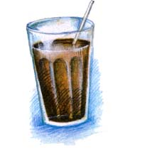

"All I really need is love, but a little chocolate now and then doesn't hurt."
- Lucy, a comic strip character in "Peanuts" by Charles Schultz
If you asked me to describe my favorite smells, I could reply, "Pine trees in northern Michigan," or, perhaps, "The smell of a new baby's skin." But, in all honesty, I must confess that my favorite smell occurs in downtown Chicago, on the Ohio Street bridge, during the afternoon rush hour. Though some might consider it pollution, to me it is a heavenly chocolate fog coming from the factory of Bloomer's Chocolates. As the fog oozes over the freeway, it's difficult to resist rolling down the car windows, even in zero-degree weather. Whenever I've fallen off the health-food wagon, you can find me either driving by Blommer's or eating its products. They come in particularly handy when I'm faced with a writing deadline. So as I wrote this, I began to wonder: Aside from the fat content, is chocolate really an evil food?
That depends. First, the bad news: your favorite chocolate bar is 55% fat, depending on the amount of cocoa butter it contains. Besides a small amount of caffeine, chocolate contains theobromine, which is also a stimulant. (This is why hot chocolate before bed isn't a good idea.) Also, chocolate must contain a considerable amount of sugar in order to be edible. Columbus found this out when he returned to Spain and presented Queen Isabella with a cup of pure hot chocolate, Aztec-Indian style. Her reaction was, "Yuk" It wasn't until 20 years later that the king of Spain thought to add sugar and vanilla.
Now the good news. Although a daily dose of chocolate could turn you into a "chocoholic," it can be helpful on occasion. According to the book Mood Foods by William Vayda, one of chocolate's amino acids, phenylethylamine, acts as a painkiller and antidepressant, which makes chocolate the "feel good food." This amino acid helps trigger the release of endorphins, which provide a sense of well-being. As if the Valentine's Day chocolate tradition needed an even greater boost, it is speculated that phenylethylamine is the chemical that the brain releases when people fall in love. It is also said that the carbohydrates in chocolate help the brain release serotonin, a neurotransmitter that plays a central role in simply feeling peaceful and well. Concerning the fat issue, even though cocoa butter is a saturated fat, recent research shows that stearic acid, unlike other saturated fats, doesn't raise cholesterol levels. (The exception would be milk chocolate, which contains milk solids). No wonder folks fall in love with chocolate.
Chocolate can scorch easily, so it's best not to melt it over direct heat unless it is mixed with other ingredients. Chocolate also melts from the inside out, so it may appear to be intact but will transform to a liquid when stirred. To melt over a burner, place the chocolate in a stainless-steel mixing bowl. Put about one inch of water in a saucepan and place the bowl so it rests on the top of the pan, making a double boiler. (The water shouldn't be touching the bottom of the bowl.) To microwave, put the chocolate in a glass measuring cup and melt on 50% power for 30-second intervals until it is almost melted. Remove and stir until smooth.
Chocolate bars and chips (not cocoa powder) need to be stored in a cool, dark place. Temperature fluctuation can cause discoloration ("bloom") to appear when the cocoa butter rises to the surface. This will disappear when the chocolate is melted, but I prefer to refrigerate or freeze chocolate in Ziplock bags since I don't use it often. I've stored chocolate that way for up to a year without any discoloration; this, in my opinion, protects the flavor.
Remember your favorite devil's food cake? This healthier cake is far from evil, since it's without dairy products and sugar. This recipe makes one layer, but you can double the recipe for a two-layer cake.
3/4 cup vanilla soy milk (not nonfat)
1/3 cup, plus 1 tablespoon, real maple syrup
1/4 cup canola oil
1 teaspoon vanilla
1 teaspoon apple cider vinegar
1/4 teaspoon cinnamon
1/3 cup sifted unsweetened cocoa powder
1 cup, plus 1 tablespoon, sifted whole wheat pastry flour (or unbleached white flour)
1 teaspoon baking soda
1 teaspoon baking powder
fresh raspberries for decoration (optional)
Preheat oven to 350°F. Cut out a waxed paper circle to line an 8" round cake pan. Using a food processor (or electric mixer), mix well all the ingredients up to and including the cocoa. Sift together the flour, baking soda, and baking powder. Add to the chocolate mixture and briefly mix. Pour into the pan and bake for about 20 minutes, just until an inserted toothpick comes out clean. (The cake should be moist.)
Let the cake completely cool on a rack for at least an hour. Loosen the edges with a butter knife and cover the pan with a serving plate. Turn the plate right side up and peel off the wax paper. Handle carefully-this cake is fragile. If you made a second layer, put it onto a plate until you hate frosted the first layer.
(Double this recipe if you're making a two-layer cake).
1/4 package (10.5-ounce) firm silken tofu, "lite" or regular Mori-Nu brand
1/2 teaspoon vanilla
3/4 cup chocolate chips (I use Sunspire nondairy.)
1/4 cup real maple syrup
Place the tofu and vanilla in a food pro cessor and blend.
In a double boiler, melt the chocolate chips and maple syrup, stirring occasionally. (You could, instead, use a glass measuring cup in a pan of water, or microwave the measuring cup for one to two minutes). When the chips have fully melted, pour into the tofu mixture. Blend until smooth. Pour into a bowl or the glass measuring cup and refrigerate until the cake is cool enough to frost. If you're decorating with raspberries, place them one by one on the outside edge of the cake after it's frosted.
"Any leftover frosting can be heated later in the microwave for a hot fudge sundae on frozen yogurt.
Here's an easy quick bread to take to the school bake sale. Just make sure that you double the batch so that there's an extra loaf for you.
1 cup grated zucchini, packed
1 large egg and 1 egg white (for a double batch, I use 3 eggs)
1/3 cup canola oil
1/4 cup low-fat buttermilk
1 /4 cup maple syrup or boney
1/3 cup brown sugar
1 teaspoon vanilla
2 teaspoons cinnamon
1-3/4 cups sifted whole wheat pastry ,flour (or unbleached white flour)
2 tablespoons unsweetened cocoa powder
1/2 teaspoon baking soda
1-1/2 teaspoons baking powder
Preheat oven to 350°F. Oil the bottom of a loaf pan, preferably one without a nonstick coating; a nonstick pan will cause the bread to get too brown. Grate the zucchini by hand or in a food processor. In a large mixing bowl, add all the ingredients up to and including the cinnamon. Mix well with an electric mixer. Sift the flour into the measuring cups and level them off with a knife. Pour into a small mixing bowl. Sift the cocoa, baking soda, and baking powder into the small bowl. Stir to mix and add to the wet mixture, mixing on low speed just until blended. Pour into the loaf pan and bake for 30 minutes, then reduce the temperature to 325°F. Bake for ten to 15 more minutes, until an inserted toothpick (into the middle of the bread) comes out clean and not sticky with batter. Cool on a rack for at least an hour before removing. Loosen the edges with a spatula and dump the bread out. Slice with a bread knife when ready to eat, wrapping tightly in plastic wrap when it's completely cooled.
The bread can be frozen whole in a freezer bag, or in individual slices in Ziplock bags so they're ready for lunch boxes.
Why use a brownie mix when these are so easy?
These brownies contain less fat than the usual brownie recipe calling for two sticks of butter. Canola and peanut (butter) oil are predominantly mono-unsaturated oils: good fat without cholesterol.
1/4 cup canola oil
1 cup semisweet chocolate chips (I use barley-malt-sweetened.)
1/3 cup smooth peanut butter
2 large eggs
1/4 cup brown sugar
2 tablespoons white sugar
1 teaspoon vanilla
1 cup, plus 1 tablespoon, whole wheat
pastry flour (or unbleached white flour)
1/2 teaspoon baking powder
Preheat the oven to 350°F. In a small saucepan, melt the oil and chips over low heat, stirring frequently with a wooden spoon. When the chips have completely melted, remove from heat.
Stir in the peanut butter until it's blended. Spoon the flour into the measuring cup until it overflows. Level across with the flat edge of a knife. Do the same with the tablespoon of flour. Pour into a small bowl and stir in the baking powder. Oil the bottom of an 8" x 8" square pan.
In a large mixing bowl, put in the eggs and beat with a hand mixer until fluffy. Beat in the brown sugar, white sugar, and vanilla until smooth. Gradually mix in the chocolate. Scrape off the beaters and add the flour and baking powder. Stir in with a wooden spoon. Spoon into the pan so the dough is evenly distributed. Bake 25 to 30 minutes or until a toothpick inserted into the middle comes out clean. Don't overbake. Cool for at least 30 minutes before cutting into 16 squares.
The perfect Valentine's Day dessert. The strawberries can be made a day ahead.
2 pints large, ripe strawberries
2 (4-ounce) bittersweet or semisweet
chocolate bars (I used Ghirardelli.)
You'll need a double boiler for melting the chocolate. Find a metal (such as stainless steel) mixing bowl that will rest in a medium-sized saucepan. If the bowl is too large, it will be difficult to dip the strawberries. You could also put the bowl in a skillet if you don't have the above. Put about an inch of water in the bottom of the saucepan (or a half inch in the skillet) and put the bowl in place.
Wash the strawberries, leaving on the stems. Dry completely on paper towels. Break up the chocolate into one-inch pieces and put in the bowl. Place over medium heat until the chocolate is completely melted. Put the strawberries, box, and saucepan on the counter with a hot pad under the pan. Dip the strawberries into the chocolate one at a time, being careful not to break the stems. The strawberries should not be totally covered with chocolate. Dip about three quarters of the berry into the chocolate. Lay on waxed paper.
When all the berries are dipped, let them harden for about 15 minutes. Put the cover on the box and refrigerate. Save any leftover chocolate for a chocolate sundae (remelt the chocolate in the microwave). Serve the strawberries on a doily-covered plate. Don't get them out of the refrigerator until just before serving, or else they will sweat and get soggy.
|
|
|
 |
|
|
|
|